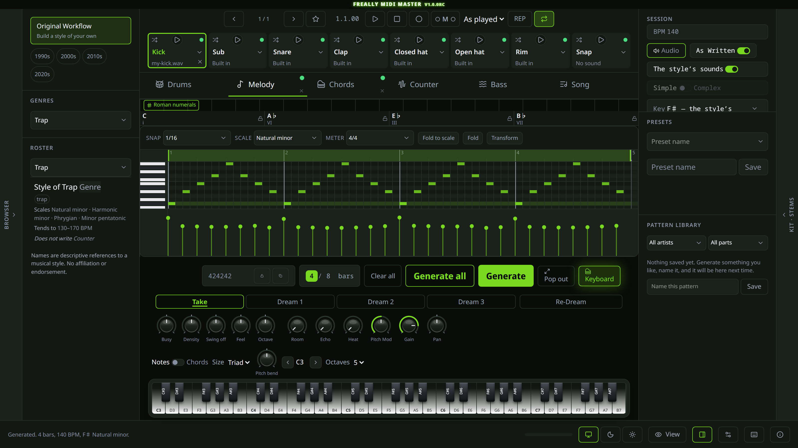
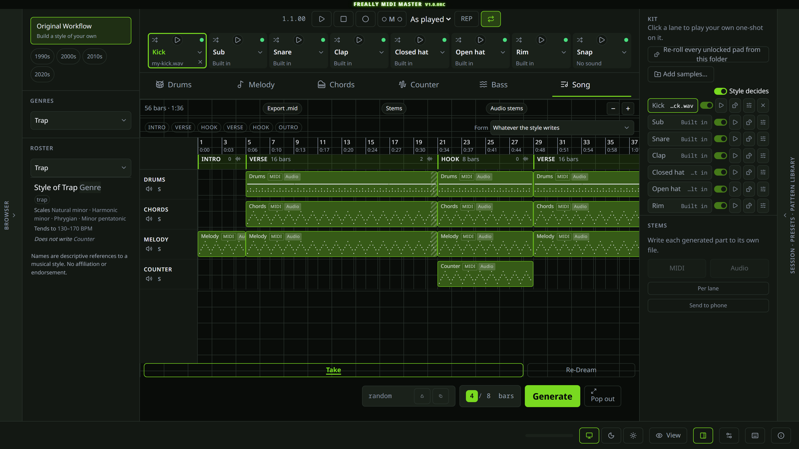

Artists, not genres
Most generators think in genres. "Trap" is not "Metro Boomin," and no mainstream tool has heard of OsamaSon. Type a name and get patterns carrying that artist's actual signatures.
v1.0.0-beta is done · v1.0.0RC is next
Drums, melodies, countermelodies, 808s, chords and full song arrangements — generated in the style of specific artists, as original MIDI, in your project's own key and tempo. Free, offline, and 100% AI-free.
Freally MIDI Master is free today, but it might not be free forever: future versions may be sold.
There are no downloads yet, and the source code is private.
Freally MIDI Master began as a desktop app; v0.2.0 was that build. As of 29 July 2026 the desktop app is retired — it is no longer built or released. Nothing already installed stops working; it simply stops finding updates.
It is now a CLAP plugin, with VST3 and AU projected from it — not for the format's sake, but because a plugin is handed the host's tempo, time signature and playhead. A generated pattern lands in the song you are actually writing, instead of at whatever tempo the artist happens to be authored at.
It loads and generates in Ableton Live 12 (VST3) and FL Studio (CLAP). Reaper, Bitwig and Logic are not yet tested. The standalone build runs the same plugin in its own window with no DAW involved.

The plugin as it runs: a generated melody with the keyboard you play it from, and a whole arrangement on a timeline.


Most generators think in genres. "Trap" is not "Metro Boomin," and no mainstream tool has heard of OsamaSon. Type a name and get patterns carrying that artist's actual signatures.

The plugin reads the host's tempo and time signature every block, so trap authored at 140 comes out at 92 in a 92 BPM project. Pin a tempo and yours wins instead.

Drums, Melody, Countermelody, Bassline and Chords — plus Song Mode, which is not a sixth generator but an arrangement that fills all five in.

Pick a mood and stay there, or leave it on Any and let each press walk that artist's range. One artist writes more than one kind of record, and no seed could ever cross between them.

Start from any artist, adjust what you care about, and save it — it sits in the roster beside the shipped ones and works exactly the same, because it is the same kind of thing. Star the takes you like and it fits a style to them.

No file to drag, no folder to hunt for. The plugin emits MIDI where you inserted it, in the host's own time.

Every generation has a seed. Copy it, paste it, get the exact same beat back — on any machine, on any day. Determinism is enforced by the test suite.

No models, no training data, no inference, and no network calls during generation. No login and no telemetry. Everything happens on your machine — including "train your own style", which measures the takes you kept and writes the numbers back rather than learning anything. A build with an AI or an HTTP client anywhere in its dependencies fails the build.
Every build lands a whole capability. Nothing ships half-done.
v0.3.0DonePlugin pivot. CLAP, with VST3 and AU projected from it. Loads in Ableton and FL Studio.v0.4.0DoneUnlimited undo. Every session change, one keystroke back — no depth limit.v0.5.0DoneIt makes a sound. A sampler behind the generators, your own one-shots on any part, and a transport that plays inside the plugin.v0.5.5DoneIt plays an instrument. A synthesizer behind every part, a factory library of 2,729,088 sounds you can browse by instrument and genre, a sample-pack maker, and a keyboard you can play at any time.v0.5.7DoneA vast, ultra-realistic library. Twenty-four new synthesis engines and 750 new instruments — 975 in all, from concert grands and bowed sections to modelled analog circuits — each one measured against the real thing it is named for. 1,614,600 sounds, and still not one file on your disk.v0.6.0DoneYour sample library. A folder tree with preview, starred favourites, drag-to-pad and reverse — plus drop a MIDI file in and it works out which parts are in it.v0.7.0DoneThe arrangement, like a DAW. Clips drawn from their own notes, zoom, multi-select, trim and clone — and drag the whole song out, one track per part.v0.8.0Done67 genres, 2,000 artists. The full roster — the underground beside the mainstream — every one a hand-written style model. The 67 genres are written and so are 1,250 artists and producers; the rest are being encoded from the research a volume at a time.v0.9.0DonePolish and hardening. Every state designed and every edge handled: accessibility, HiDPI, crash safety, cold start under three seconds.v1.0.0-betaDoneFeature complete. Everything 1.0 promises, plus collaboration rooms and Freally MixSir, the phone companion. Still no download — this is the build that gets tested by hand.v1.0.0RCPlannedRelease candidate. Re-Dream lands — every generation arrives as four, the take you have plus three dreamed after it, auditioned in the track before one replaces the part. Then the manual test pass, worked end to end on real hardware in a real DAW.v1.0.0The goalDownloads open. All five generators plus Song Mode, collaboration rooms and MixSir, every format, on all three platforms. The first build anyone can install — after an optimization pass, a simplification pass, a code review and a security review, with both self-hosted CI runners green.There is nothing to download yet. v1.0.0RC is next, and it is being tested by hand right now — every host, every OS, and the things no test suite can judge. A plugin that half-works inside somebody's session is worse than one that is not there, so it ships when that matrix is green and not before.
There is no AI in this product. No models, no training data, no inference, no network calls during generation. The engine is deterministic procedural code reading hand-authored style parameters derived from published research. That is a legal architecture as much as a technical one: nothing here is copied MIDI, sampled audio, or a transcription of anyone's record, and there is no feature that recreates a specific song. Artist names are descriptive style references only.
With no royalty and no attribution requirement. Freally MIDI Master itself is proprietary, All Rights Reserved, and its source code is private — you may not redistribute it. It is not open source.
Artist and producer names in Freally MIDI Master are descriptive references to a musical style, nothing more. No affiliation, endorsement, or authorship is implied or claimed. Every pattern is generated procedurally from hand-authored style parameters — no MIDI, audio, or data is copied from any recording. All trademarks and names are the property of their respective owners. Read the full disclaimer.
No accounts. No telemetry. Nothing about you, your projects or your output is ever transmitted. Generation, playback, import and export are entirely local.
The two that used to exist — a launch-time update check and an opt-in crash report — belonged to the desktop app and were removed with it. A plugin is installed and updated by whoever installs plugins. Enforced by two build gates rather than promised: no HTTP client is compiled into the plugin — still true, because the collaboration service is reached by a separate program, never by the plugin your DAW loads — and the interface itself is driven through a generation on every commit and fails if it attempts a single request off the machine. Crash reports are written to your own disk and never sent anywhere.
A page has to be fetched — the app itself, and the style data it generates from. That is the whole of it. Generation runs on your own machine, in your own browser; your beats, your seeds and anything you import stay there and are never uploaded. After one visit the tab works with the network switched off, which is closer to offline than most software manages.
Rooms connect your machine directly to the people you invite. If you save someone as a buddy, a small service can tell you when they are online — and it is told nothing worth knowing: a key that changes every few minutes, and an address encrypted to a secret only the two of you hold. It cannot read it, cannot list who is there, and cannot work out who knows whom. Turn it off, or never save a buddy, and you paste a code instead — which is how rooms work anyway.
The collaboration feature — rooms, in development and not installed by anything today — needs to learn your machine's public address before two people can connect directly, which is what a STUN server is for. When it lands, opening or joining a room will contact one; this build names Cloudflare and Google. Such a server learns only that some address is using a WebRTC application — not who you are talking to, and not what you send — and nothing is contacted until you open or join a room. The sentence above stays true for the plugin as it ships today.
The changelog lists everything that changed in Freally MIDI Master, version by version, in all eighteen languages.